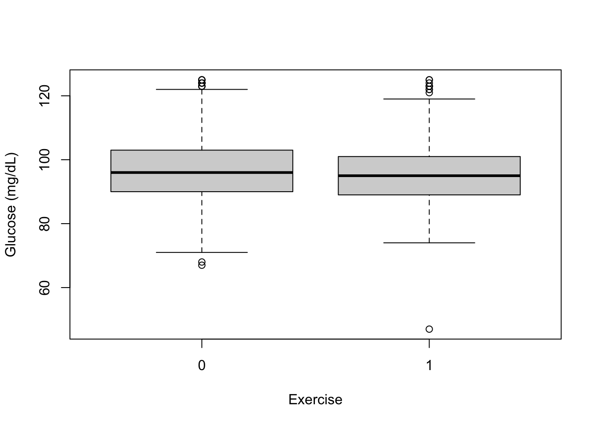

The Heart and Estrogen/Progestin Study (HERS) is a clinical trial of hormone therapy for prevention of recurrent heart attacks and death among post-menopausal women with existing coronary heart disease.
In this exercise we will study how different variables may influence the glucose level in the blood for the non-diabetic women in the cohort, in particular we are interested to see if exercise may help to reduce the glucose level
# load data
hers <- read.table("https://raw.githubusercontent.com/my1396/course_dataset/refs/heads/main/hers.txt",
sep="\t", header=T, na.strings=".")Women with diabetes are excluded because the research question is whether exercise might help to prevent progression to diabetes among women at risk, and because the causal determinants of glucose may be different in that group.
# create a subset of interest
hers.no <- hers[hers$diabetes==0, ]We will start out by investigating how the glucose levels are for women who exercise at least three times a week (coded as exercise=1) and women who exercise less than three times a week (coded as exercise=0).
Make a summary and boxplot of the glucose levels according to the level of exercise:
summary(hers.no$glucose[hers.no$exercise==0])## Min. 1st Qu. Median Mean 3rd Qu. Max.
## 67.00 90.00 96.00 97.36 103.00 125.00summary(hers.no$glucose[hers.no$exercise==1])## Min. 1st Qu. Median Mean 3rd Qu. Max.
## 47.00 89.00 95.00 95.67 101.00 125.00boxplot(hers.no$glucose~hers.no$exercise)
Test if there is a difference in glucose level and make a confidence interval:
t.test(glucose~exercise, var.equal=T, data=hers.no)##
## Two Sample t-test
##
## data: glucose by exercise
## t = 3.8685, df = 2030, p-value = 0.000113
## alternative hypothesis: true difference in means between group 0 and group 1 is not equal to 0
## 95 percent confidence interval:
## 0.8346242 2.5509539
## sample estimates:
## mean in group 0 mean in group 1
## 97.36104 95.66825Perform a simple linear regression with glucose level as outcome and exercise as predictor:
fit.simple <- lm(glucose~exercise,data=hers.no)
summary(fit.simple)##
## Call:
## lm(formula = glucose ~ exercise, data = hers.no)
##
## Residuals:
## Min 1Q Median 3Q Max
## -48.668 -6.668 -0.668 5.639 29.332
##
## Coefficients:
## Estimate Std. Error t value Pr(>|t|)
## (Intercept) 97.3610 0.2815 345.848 < 2e-16 ***
## exercise -1.6928 0.4376 -3.868 0.000113 ***
## ---
## Signif. codes: 0 '***' 0.001 '**' 0.01 '*' 0.05 '.' 0.1 ' ' 1
##
## Residual standard error: 9.715 on 2030 degrees of freedom
## Multiple R-squared: 0.007318, Adjusted R-squared: 0.006829
## F-statistic: 14.97 on 1 and 2030 DF, p-value: 0.000113The women who exercise at least three times a week and the women who exercise less than three times a week may differ in many ways. For example they may be younger and have a lower BMI (body mass index). We will therefore perform a multiple linear regression analysis where we adjust for these to variables.
Perform a simple linear regression with glucose level as outcome and exercise, age, and BMI as predictors:
| Dependent variable: | ||
| glucose | ||
| (1) | (2) | |
| exercise | -1.693*** | -0.905** |
| (0.438) | (0.430) | |
| age | 0.057* | |
| (0.031) | ||
| BMI | 0.485*** | |
| (0.042) | ||
| Constant | 97.361*** | 79.854*** |
| (0.282) | (2.563) | |
| Observations | 2,032 | 2,030 |
| R2 | 0.007 | 0.070 |
| Adjusted R2 | 0.007 | 0.068 |
| Residual Std. Error | 9.715 (df = 2030) | 9.413 (df = 2026) |
| F Statistic | 14.965*** (df = 1; 2030) | 50.570*** (df = 3; 2026) |
| Note: | ***: p<0.01; **: p<0.05; *: p<0.1 | |
\[ D \overset{?}{\rightarrow} X \rightarrow Y \] We simulate data based on the following DGP.
\[ y = \beta_0 + \beta_1 x + \varepsilon. \] where \(\beta_0=0.2\) and \(\beta_1=1\).
Data set up.
D <- rep(c(0, 1), each = 4)
X <- seq(from=1, by=1, length=length(D))
beta0 <- 0.2
beta1 <- 1
epsilon <- rnorm(n=length(D), sd=0.01)
y <- beta0 + beta1*X + epsilon
data <- tibble("D"=factor(D), X, y)
data## # A tibble: 8 × 3
## D X y
## <fct> <dbl> <dbl>
## 1 0 1 1.20
## 2 0 2 2.22
## 3 0 3 3.20
## 4 0 4 4.20
## 5 1 5 5.20
## 6 1 6 6.20
## 7 1 7 7.21
## 8 1 8 8.19Fig. 1: Suspicious correlation due to confounding.
Run the following three regressions.
confound1_unadjusted <- lm(y~D, data=data)
confound1_adjusted1 <- lm(y~D+X, data=data)
confound1_adjusted2 <- lm(y~X, data=data)| Dependent variable: | |||
| y | |||
| Unadjusted | Conditional on X | True model | |
| (1) | (2) | (3) | |
| D1 | 3.995*** | -0.003 | |
| (0.912) | (0.012) | ||
| X | 1.000*** | 0.999*** | |
| (0.003) | (0.001) | ||
| Constant | 2.704*** | 0.206*** | 0.207*** |
| (0.645) | (0.008) | (0.006) | |
| Observations | 8 | 8 | 8 |
| R2 | 0.762 | 1.000 | 1.000 |
| Adjusted R2 | 0.722 | 1.000 | 1.000 |
| Residual Std. Error | 1.290 (df = 6) | 0.008 (df = 5) | 0.007 (df = 6) |
| F Statistic | 19.169*** (df = 1; 6) | 325,352.300*** (df = 2; 5) | 769,487.000*** (df = 1; 6) |
| Note: | ***: p<0.01; **: p<0.05; *: p<0.1 | ||
Fig. 2: Directional Acyclic Graph (DAG): Negative confounding.
We simulate data based on the following DGP.
\[ y = \beta_0 + \beta_1 x + \beta_2 D + \varepsilon , \] where \(\beta_0=0.2\), \(\beta_1=1\) and \(\beta_2=-4\).
Data set up.
D <- rep(c(0, 1), each = 4)
X <- seq(from=1, by=1, length=length(D))
beta0 <- 0.2
beta1 <- 1
beta2 <- -4
epsilon <- rnorm(n=length(D), sd=0.01)
y <- beta0 + beta1*X + beta2*D + epsilon
data <- tibble("D"=factor(D), X, y)
data## # A tibble: 8 × 3
## D X y
## <fct> <dbl> <dbl>
## 1 0 1 1.19
## 2 0 2 2.19
## 3 0 3 3.21
## 4 0 4 4.20
## 5 1 5 1.19
## 6 1 6 2.20
## 7 1 7 3.20
## 8 1 8 4.20Fig. 3: Negative confounding.
Run the following two regressions.
confound2_unadjusted <- lm(y~D, data=data)
confound2_adjusted <- lm(y~D+X, data=data)| Dependent variable: | ||
| y | ||
| Unadjusted | Conditional on X | |
| (1) | (2) | |
| D1 | 0.00004 | -4.012*** |
| (0.916) | (0.009) | |
| X | 1.003*** | |
| (0.002) | ||
| Constant | 2.698*** | 0.191*** |
| (0.647) | (0.006) | |
| Observations | 8 | 8 |
| R2 | 0.000 | 1.000 |
| Adjusted R2 | -0.167 | 1.000 |
| Residual Std. Error | 1.295 (df = 6) | 0.007 (df = 5) |
| F Statistic | 0.000 (df = 1; 6) | 117,054.500*** (df = 2; 5) |
| Note: | ***: p<0.01; **: p<0.05; *: p<0.1 | |